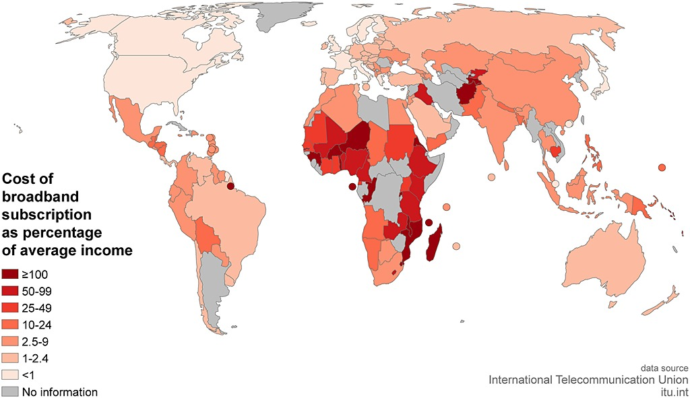

Information Geographies
The internet is a global archive of collective thoughts of humanity past present and future. It is an endless stream of information build and created by various humans around the globe. At least on the surface it is.
Since the invention of nuclear weapons man has no physical limitations on the battle field. But to assure we don’t mutually destroy one another, people use a different tool to fight and spread messages. Information is the new weapon, and the internet the means of which it spreads.
The internet has been a wonder of making a connected globe, where news facts and information can reach everyone, and on the same boat so can lies and deceit. Its easy to feel like the representation of people on the web is somewhat equal, that amongst normal people we all have a similar reach as to how far we can spread information.
The internet is the single largest shaper of our world. Being able to for groups and spread ideas globally has accelerated the growth and development of humanity, both technologically and politically. It is important to understand the geographies of the web, that being representation of consumption and creation, and try understand why and how we can create a more equal , and in turn, free web. We need to understand who has the power of information and who is consuming that information.
We will look at data driven figures and maps that highlight a clear inequality of internet users and creators. All data has been taken from Graham et al’s “Toward a study of information geographies”. We say ‘Geographies’ as you will see on the map data internet users and consumers have been grouped by their geographical location. We can see trends of close areas and the difference between the northern and southern hemispheres.
‘different groups of people [are] trying to impose different narratives on informational augmentations’, The core of this paper is to try and understand what these narratives are and who is imposing them. The authors speak about uneven access and uneven participation and representation. The internet is still a technology at the end of the day, it requires infrastructure, money and equipment to access. Different countries have different levels of these necessary things, this leads to the under representation of certain groups and the over representation of others.
The authors highlight the idea that if someone or somewhere is not connected to the internet they are essentially invisible, not only physically, but their ideas and philosophies are also lost.
“The geographic distribution of information… has long been a key means of control and power formation”, the idea that information is power, and those that control it are in control. The paper also sets out to find who is on control. “… digital age offers a potentially radically different political economy of information”, who controls this political economy, and who is getting left out in the new world‘?
There are three key factors of geographies we must look at;
1)Access and enablement:physically who has access and who does not.
This map shows us the effective internet penetration and the number of internet users of a region, the larger an area the more users, the darker a country the higher its penetration. It is important to note the southern half of Africa, and how little internet penetration there is, and the amount of internet users.
Cost is another important aspect of access to the web, the map below shows the cost of broadband as a % of the average income.

We can see Africa has the highest cost of broadband as for what people can afford. This harshly limits internet access to the majority. We will see how this affects representation later on.
2)Participation:
To understand internet participation, the authors looked at two major sites(Github users and Wikipediae edits) and domain names. These give an idea of the disproportionate creators on the internet.
The map below shows the distribution of domain names across the globe. The larger the bubble the more domain names registered, the darker the bubble the larger the internet population.
Its very clear to see who owns the most domain names and who controls very little. Again we can see that African participation is shockingly low. Do we even exist on the internet, when we are over run by the rest of the world?
I will now look at Wikipedia as I believe it is one of the most important websites to ever exist. The map below shows the number of Wikipedia edits by country.
Wikipedia has a page on every politician and every major event in history. We need to understand who is writing and construing information about these things. Who will tell the world our history, and who will have the power of information describing our politicians to us. They say history is written by the victor, maybe that is true.
3)representation:
The authors look at how geography is represented geographically. They use three metrics: Google Search, OpenStreetMap, and Freebase and Geonames.
The data below represents the ‘Distribution of internet users and platforms of representation’
We can see here how representation is linked to population. It is not necessarily true that a higher population will lead to increased internet representation. It is clear to see Europe has one of the highest representation on each of the 4 sites yet is one of the smallest populations. North America also echo’s this pattern. While Africa makes up a slither of internet representation despite having a larger population than Europe and North America.
Posted on
by George J. Ridley